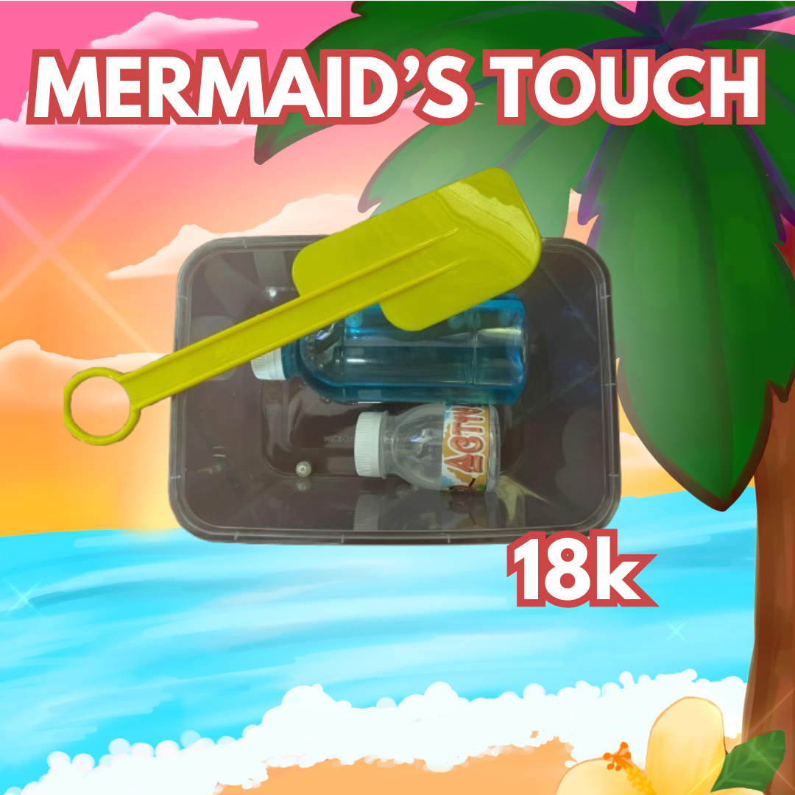

Kami memiliki ide untuk membuat sate lilit yang nanti akan dipasangkan dengan nasi dan sambal matah
untuk menjadi khas makanan dari Bali. Untuk cookies, kami ingin mempunyai produk makanan manis untuk
dijual pada booth kami. Oleh karena itu, kami mengidekan untuk membuat cookies tersebut. Lalu, kami juga
mempunyai snack platter sebagai produk makanan lain yang kami akan jual saat bazaar. Snack platter
tersebut berisi kentang goreng dan sosis yang digemari banyak orang untuk memenuhi target audiens yang
kita rencanakan yaitu teman-teman di sekolah Santa Ursula Jakarta serta orang tua murid yang datang.
Snack Platter awal mulanya juga merupakan mozzarella stick. Namun, akibat kesulitan mencari supplier
maka dari itu disepakati untuk membuat snack platter yang sumber bahan - bahannya mudah untuk ditemukan.
Archipelago Totebag
Tema dan Budaya
Idea awal dari desain totebag kami adalah untuk mencakup beberapa budaya di Indonesia yang akan
dijadikan satu dalam sebuah gambaran. Kami mengambil budaya dari beberapa bagian Indonesia seperti
Barong, Ulos, dan juga Candi Borobudur. Kami menggunakan campuran budaya budaya ini karena kami setuju
bahwa kombinasi tersebut akan menggambarkan bagaimana Indonesia memiliki banyak sekali budaya dan
perbedaan yang sangat beragam dan banyak sekali perbedaannya. Yakni perbedaan budaya tersebut akan
saling melengkapi satu sama lain. Menjadikan budaya - budaya tersebut sebagai kekayaan bangsa dan
bukan alat pemecah.
Ulos merupakan sebuah jenis kain khas Batak, Sumatera Utara. Ulos biasa menggambarkan sebuah rasa
sayang kepada seseorang dan ikatan persaudaraan. Begitu juga, tarian barong merupakan sebuah tarian
yang menggambarkan sebuah pertempuran klasik antara “Kebaikan dan Kejahatan”. Bagaimana dalam
ceritanya, barong menjadi pelindung dari kejahatan serta simbol dari kebaikan dan keadilan. Sementara
Candi Borobudur adalah sebuah bangunan yang dibuat untuk memuliakan ajaran Budha Mahayana. Dipercayai
juga sebagai simbol harmoni dan kedaimaian. Desain dilengkapi juga dengan tulisan Menyama Braya yang
berasal dari bahasa Bali yang berarti bersatu dalam persaudaraan.
Kami membuat desain kami yang mengkolaborasikan semua budaya budaya ini menjadi satu. Walau semua
budaya budaya ini memiliki arti yang berbeda, namun kami satukan untuk menggambarkan wujud asli
persatuan Indonesia. Rangkaian budaya yang saling mengkomplemen satu sama lain dalam memperkuat arti
dari keharmonian dan ikatan persaudaraan dalam perbedaan yang ada. Sebab visi kami yakni menyampaikan
pesan itu ke para pembeli yang membeli tas totebag. Bahwa walaupun kita semua berbeda - beda namun
kita tetaplah satu jiwa. Semua budaya yang kami gambarkan merupakan budaya yang sudah dibuat dari
puluhan, bahkan ratusan tahun yang lalu. Ini menggambarkan bahwa Indonesia sudah berada sejak zaman
dahulu.
.png)
Tema dan Budaya
Proses pembagian dan perencanaan tugas diawalkan dari bulan Agustus 2024. Pada saat itu, kami menyatukan
ide untuk membuat sebuah kaos dengan desain yang menggambarkan bagaimana budaya Indonesia memiliki
banyak sekali variasi, dan dengan semua variasi budaya kami maka budaya tersebut dapat saling
melengkapi. Kami ingin menyampaikan suatu pesan kepada generasi muda bahwa walaupun Indonesia memiliki
banyak sekali keberagaman namun kita tetap bersaudara. Bahwa kami sama - sama bertumpah darah yang satu
dan menjadi generasi penerus Indonesia. Sehingga kita tidak mungkin bisa sendiri dan membutuhkan satu
sama lain untuk membangun negeri ini. Ide awal kami adalah untuk menggambarkan beberapa budaya yang
berbeda dalam satu gambar, budaya - budaya yang saling mengkomplemen satu sama lain sehingga memperkuat
pesan persatuan itu. Setelah itu Amanda dan Rinjani mulai proses menggambarkan desain kami. Setelah 2
bulan memfinalisasikan desain gambar kami, akhirnya kami menyelesaikan proses menggambarnya. Namun, kami
merasa kurang cocok dengan tulisan yang terdapat pada desain kami. Pada awalnya tulisannya berupa
“Bersatu” namun menurut kami, itu terlalu banyak digunakan dan kurang membuat orang penasaran. Ide
muncul saat kami mengingat tema kelompok kami ialah Bali, kemudian adanya frase yang cukup menarik untuk
kami yaitulah “Menyama Braya”. Menyama Braya menggambarkan konsep kehidupan di Bali yang bersumber pada
adat istiadat dan hidup rukun dalam persaudaraan. Tulisan kami usahakan menggunakan font yang mencolok
sehingga menyala bersama dengan desainnya. Kami mencari di beberapa website yang berbeda. Setelah
beberapa kali mengganti font tulisan pada desain kami, kami akhirnya memilih jenis tulisan yang akan
kami gunakan. Yaitu sebuah font dari canva yang dicari dan ditemukan oleh Kimaya.
Toleransi dan Tenggang Rasa
Archipelago totebag merupakan sebuah totebag dengan ukuran 30 x 35 cm mengunggulkan desain yang bertujuan
untuk menumbuhkan rasa toleransi, tenggang rasa, dan cinta tanah air. Toleransi merujuk pada sifat
menghargai dan menghormati terhadap perbedaan orang lain. Sifat terbuka dan reseptif atas perbedaan
budaya yang ada. Tenggang rasa merupakan sifat menghargai dan menghormati orang lain baik secara lisan
maupun dalam suatu aksi perbuatan. Kedua sifat tersebut berkorelasi dan merupakan aksi dalam menjaga
keutuhan dan persatuan bangsa. Menjadi usaha dalam mengajak orang - orang sekitar untuk menumbuhkan rasa
toleransi, tenggang rasa, dan cinta tanah air melalui desain totebag yang unik, menarik, dan
melambangbangkan keberagaman di Indonesia.
Archipelago merupakan istilah yang berarti kepulauan atau kumpulan pulau - pulau yang berada di lautan,
sungai, danau. Dengan itu, cocok untuk menjadi nama totebag kami yang memiliki desain yang
merepresentasikan Indonesia melalui ilustrasi sosok barong yang menjaga teritoritas keanekaragaman di
Indonesia. Seperti yang digambarkan yakni candi borobudur dan kain ulos yang juga dijelaskan memiliki
makna yang saling melengkapi elemen di desain totebag. Mengapa barong? Selain karena tema toko Mallika
itu sendiri Bali, tetapi juga makna barong sebagai pelindung dan penjaga kebaikan. Dalam ceritanya
barong berperan sebagai kebaikan dan pelindung yang melawan kekuatan jahat. Kekuatan jahat disimbolkan
disini adalah api dan tangan - tangan manusia. Menjadi makna dari ulah manusia yang dapat menghancurkan
persatuan di Indonesia. Seperti mengunggulkan budaya sendiri, tidak menghargai satu sama lain. Sebab
perpecahan itu sendiri berakar dari perbuatan manusia. Hanya manusialah yang bisa memecahkan namun juga
menguatkan persatuan di Indonesia. Dengan itu totebag ini menjadi suatu pengingat sederhana akan
keberagaman budaya yang ada di Indonesia. Serta keberagaman itu merupakan hal yang menguatkan kita
masyarakat Indonesia dalam menjunjung persatuan. Sebab, bila kita terpecah - pecah negara Indonesia akan
bubar dikarenakan tidak adanya fondasi yang kuat dalam menghadapi tantangan - tantangan yang ada.
Kontribusi Pelestarian Budaya
Melalui totebag ini, secara tidak langsung kami juga melestarikan budaya indonesia. Melalui penggabungan
elemen - elemen budaya dari beberapa daerah di Indonesia, kami memperkenalkan kebudayaan yang terdapat
di Indonesia. Bahwa mereka dapat menjadi semakin mengenal kebudayaan yang ada dan menimbulkan rasa ingin
tahu lebih lanjut mengenai budaya yang digambarkan dalam totebag. Sehingga desain totebag dapat menjadi
media edukasi kepada para pembeli. Menjadi pengingat untuk mereka bahwa Indonesia kaya akan budaya dan
yang tertera dalam totebag hanya 3-4 dari ribuan budaya yang ada. Kami juga menunjukan penghargaan
terhadap budaya tersebut. Sebab ditengah gempuran budaya - budaya luar, adanya usaha untuk menunjukan
keindahan warisan budaya Indonesia kepada generasi muda. Tak hanya itu, namun juga meningkatkan ataupun
menumbuhan kesadaran pada generasi muda akan pentingnya melestarikan budaya di Indonesia agar
kekayaannya tidak dilupakan dan dapat diturunkan dari generasi ke generasi. Sebab warisan budaya itulah
merupakan identitas negara Indonesia dan menjadi fondasi dalam menciptakan persatuan dan kesatuan
bangsa.
Di era globalisasi ini, masyarakat akan semakin mudah dipengaruhi oleh budaya luar. Pembuatan desain
totebag ini hanya langkah kecil dari menjaga kebudayaan yang ada di Indonesia. Mengedukasi masyarakat
dan melestarikan budaya di Indonesia dapat dilakukan melalui banyak hal, sebab media digital yang sangat
luar memberi ruang untuk kita berkreasi dan berinteraksi.
Produksi Produk
Walau awalnya kami ingin untuk menjual kaos, setelah desainnya selesai digambarkan, kami memutuskan
untuk menjualnya sebagai tote bag. Juga, kami khawatir untuk bagaimana produk kaos akan terjual pada
saat bazaar. Menurut kami, tote bag akan lebih menjual dibandingkan dengan kaos. Tempat sablon totebag
dibantu oleh Shianne, Aurel, dan Cleo dalam mencari tempat sablonannnya. Proses tidak hanya berlangsung
sehari namun mencapai seminggu, agar kami menemukan tempat sablon yang memiliki printan yang detail dan
bahan yang berkualitas. Akhirnya kami menemui toko yang dapat melakukan sablonan sesuai dengan jenis
yang kita inginkan dan memiliki ukuran yang cukup tidak terlalu besar tidak terlalu kecil.
Kalung Kerang, Jepitan Bunga, Scrunchie Batik
Aksesoris sudah menjadi suatu hal yang pasti untuk kami jual saat awal - awal membentuk konsep. Hal
ini dikarenakan pantai Bali yang mengingatkan kami liburan ke pantai. Suasana pantai yang ingin kami
bawa melalui aksesoris yang akan dijual. Seperti kalung kerang yang kami namakan “Coastel Charms”
yang mengingatkan kami dengan kerang - kerang di pantai yang mungkin dulu kita kumpulkan. Kemudian
kami juga merencanakan aksesoris rambut. Bagaimana menjadi suatu hal yang digemari siswi - siswi SMP
Santa Ursula Jakarta. Scrunchie batik dapat menjadi suatu hal yang bermanfaat untuk mereka gunakan
dalam kehidupan sehari - hari terutama di sekolah. Sebab peraturan sekolah yang mewajibkan siswi
untuk mengikat rambut. Kemudian jepitan bunga dapat menjadi hiasan tambahan dalam mempercantik diri
mereka sendiri.
Photobooth
Sekelompok sudah memiliki keinginan untuk membuat photobooth. Melihat bazaar angkatan atas yang
ramai, kami mengobservasi bahwa yang sering ramai adalah photobooth. Photobooth juga dapat menjadi
essence penting di bazaar untuk mendokumentasikan kebersamaan bersama teman atau kerabat. Kami
ingin mengcapture memori tersebut sehingga bazaar kita dapat membekas ke para siswi. Mengingat
bahwa mereka foto di stand bazaar Mallika. Kebutuhan photobooth juga sudah dimiliki oleh anggota
kelompok sehingga tidak ada kesulitan untuk mendapatkan bahan - bahan dalam menyiapkan photobooth.
Slime Kit
Kami membuat produk Slime Kit dengan idea lautan yang biru dan cerah. Kami menjual Slime Kit
sebelumnya sudah menjadi sebuah tren di kalangan remaja dengan umur yang mirip dengan kami.
Walau memang banyak kelompok lain yang ikut menjual Slime, namun kami menyadari bahwa kami harus
memiliki sesuatu hal yang berbeda dibandingkan dengan kelompok lainnya. Akhirnya, kami
menyetujui bahwa kami akan menjual Slime Kit dimana kami akan menjelaskan bahan bahan yang
diperlukan untuk membuat Slime. Slime tersebut akan diolah sendiri oleh para pembeli. Kami
menjual Slime Kit kami dengan lem yang berwarna biru yang menggambarkan lautan yang berwarna
biru.


.png)
.png)
.png)
.png)